入口不按玩家任务分组
查寻访先经过手艺；新营业若继续加进去，管理页会越长越深。
从一锅出品，到一张营业小票，再到路上带回的新风味。五个稳定的主入口，承接下一阶段的经营、挂机与收集。
以下为本次从实际游戏实现取得的320×568截图，使用隔离演示进度。它们是当前实现，不是此前设计文档中的理想布局。
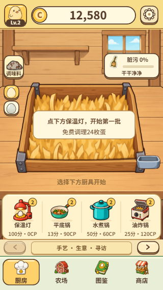
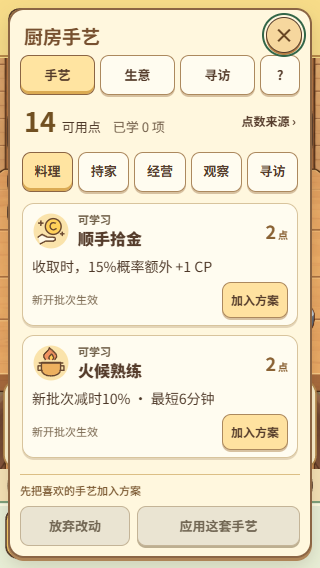
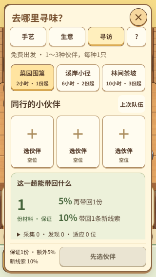
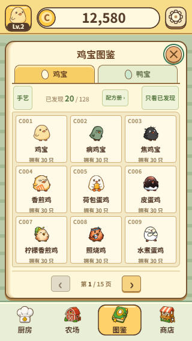
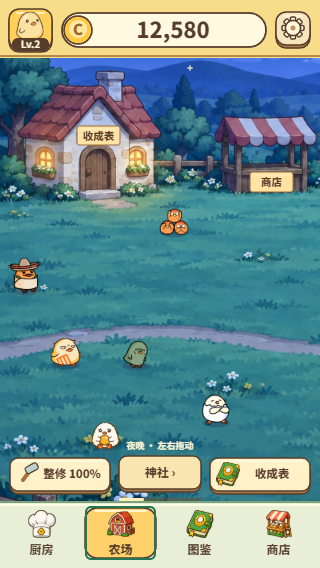
查寻访先经过手艺；新营业若继续加进去，管理页会越长越深。
已收录、留家、在途、采购预留、营业未售，不能用一个“拥有”数字解释。
配队、订单、配方与详情互跳以后，关闭和返回需要统一来源。
固定一级导航。功能增长发生在册页、列表与地区内部，不再增加第六个入口。商店与手艺仍是完整页面，从厨房固定工具和实际缺项直接进入。
这一锅如何？下一锅做什么？
伙伴在哪里？哪些可以用？
卖给谁？为什么再做一锅？
去哪？带谁？寻找什么？
认识了什么？接着想发现什么？
迁移少，但没解决入口堆积。营业、常客和项目最终仍会挤进同一个大面板。
320宽每项64px，五项都是两个字。生产、生活、销售、外出与知识各有固定位置。
底栏更松，但观看伙伴和管理库存多一步，也削弱既有农场的生活感。
计步只算点击与确认，阅读、滚动和等待另计。这里给出设计目标，不冒充真人效率测试。可点击原型左上“设计演示”可重置流程及推进示例时间。
订单预留可以同时安排，但不等于交付；同一只不能同时上架、交付或派出。
下次可以沿用备货，也可以看一份采购；只给最多两条可行动的后续。
当前锅未收完就保留下一锅草稿。缺料跳对应货架，返回仍在原配方。
只收集也能得到收录阶段成果，实践只增加额外印记；未知名称不从主题候选旁路泄露。
以下为原型在320×568实际浏览器视口下的首屏截图。正文可向下滚动，提交与主导航始终占独立区域。缩略图便于比较，点击页面进入可操作样板。
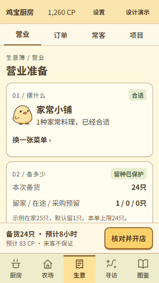
摆什么／备多少／招待谁。留种与占用在数量旁说明，价格区分确定与可能。
查看备货与核对 →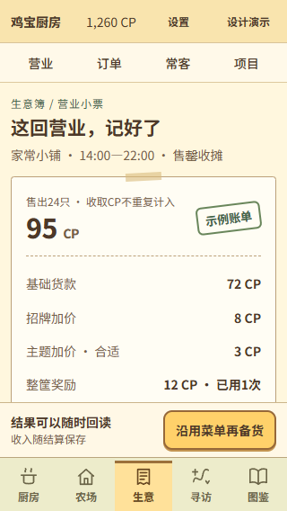
收入已到账；小票解释货款、次数与库存去向，再给下一份采购。
查看已到账账单 →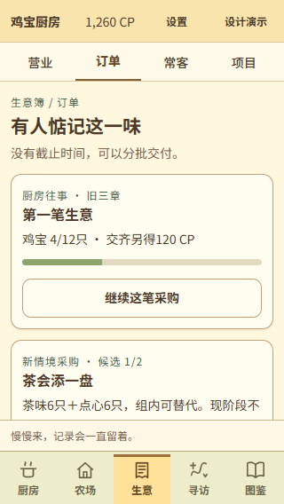
旧三章独立，新采购最多2单。常客是有限往来，没有每日好感维护。
查看常客折页 →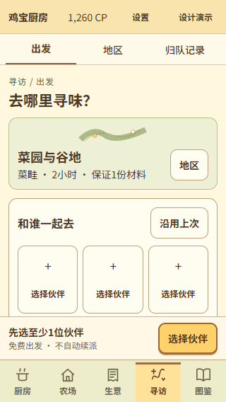
地点归路线、特征归队伍、关注归这趟。旧线索与新发现分开解释。
查看寻访准备 →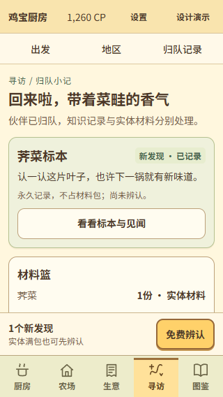
一张新发现卡承载标本与见闻；材料是实体，满包仍可先看记录。
看标本如何影响厨房 →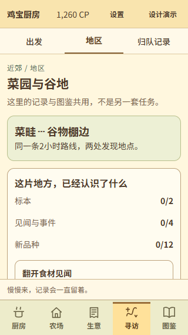
行动页说下一趟去哪，记录页说已认识什么。共用一份地区内容。
查看地区结构 →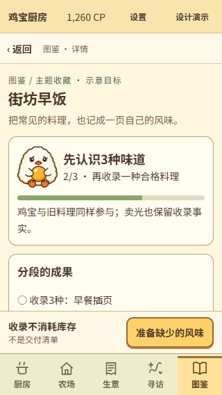
品种、任选项与实践分段。全241格退到索引，当前只追一个目标。
查看新版图鉴 →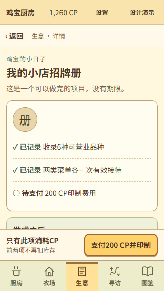
已记录、需交付、待支付分清。做好就毕业，成果回到收藏与陈列。
查看筹备与印制 →原型范围：营业与账单、三种库存去向、一次寻访与标本辨认、下一锅、新品与主题成果、分批订单、项目印制可试走。配方成本、真实概率、完整库存编辑与全量内容没有实现；边缘系统展示归属。页头“设计演示”提供空库存、满包、保存失败和模拟时间。
当前游戏是320逻辑宽＋zoom，桌面仍居中竖幅。本方案的信息页采用实际CSS像素；桌面≥1024且高度足够才展开导航与伴随摘要。场景继续按原比例显示，不能直接拉宽。
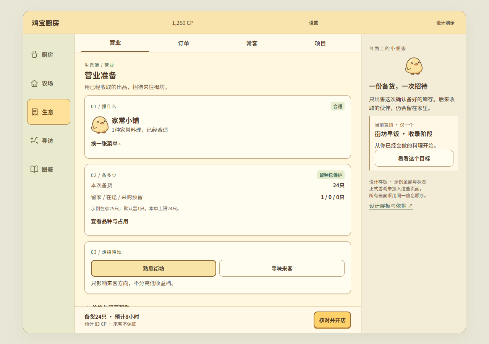
320宽每个主导航64px，点击区至少44×44。正文14～15px，长条件换行；安全区额外计算，不能把主按钮盖在正文上。
长屏多露出几张卡。桌面增加当前摘要与比较，不增加资源表格墙；侧栏在窄屏折回正文，没有隐藏流程。
游戏场景继续320逻辑坐标，新的信息页从zoom父层分离。当前原型只验证独立外壳，正式接入仍需重新检验画布命中与WebView安全区。
稳定主导航
全局置顶目标
结果后续最多两项
最小点击高度px
沿用角色、厨具、纸色与粗棕轮廓。角色带来可爱，信息骨架保持克制；厨房美术仍以原作墙、平台、床前沿和篮子关系为准，不能擅自添加现代固定设备。
一趟发现可以推进多处记录，但由一张归队卡集中说明。图鉴与主题页是回读入口。
新菜单进菜单册，新常客进往来折页，新地区进路线和见闻。解锁不移动一级入口。
没有打卡大厅、常客衰减和项目期限。没有新事件就安静显示，不制造必须处理的红点。
原型已检查六种视口的页面边界、按钮高度和四条主流程；具体数量与结果以检查记录为准。截图经过人工查看并收紧小屏装饰。没有进行真机、完整读屏或新玩家理解测试，也没有更改游戏功能、存档与正式美术。